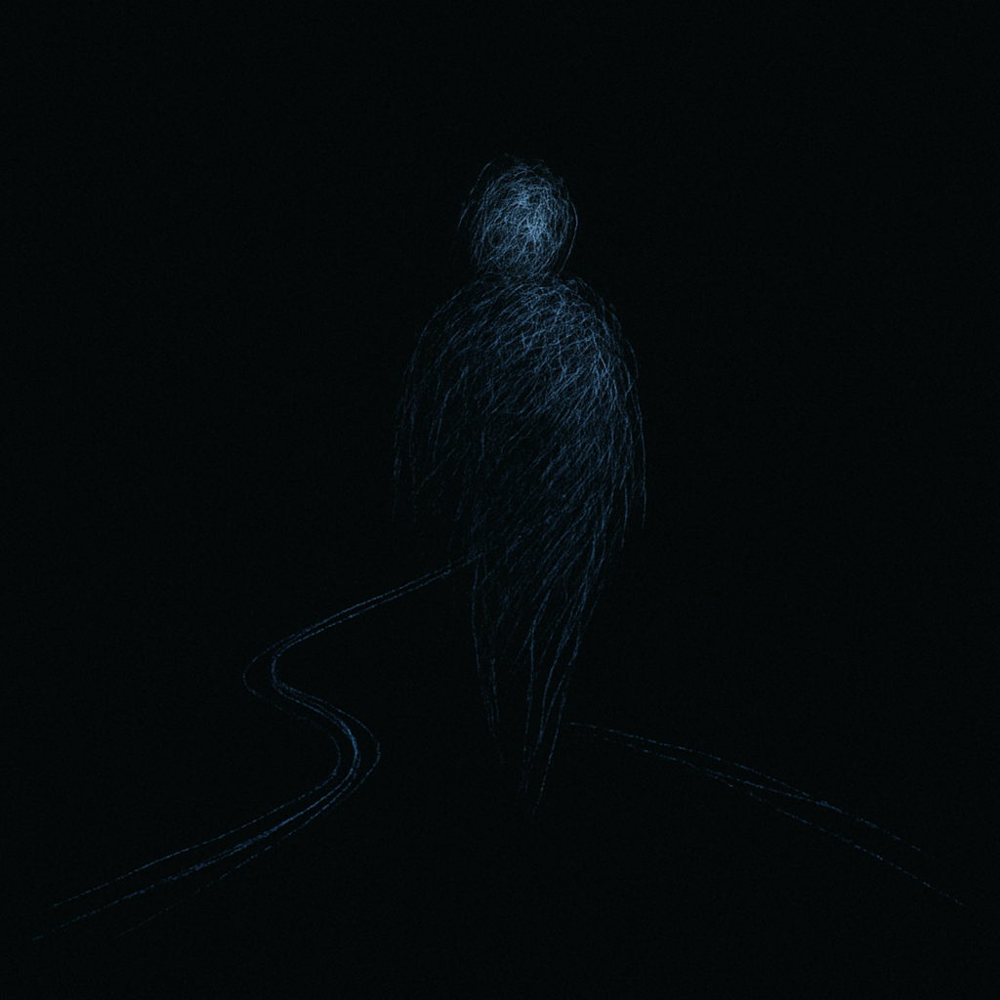

Sen
Aleksandar Gazibara

Morao bih do prodavnice, nisam izlazio dva dana – pomisli Senad, koji se tek navikavao na penzionerski život. Njegovi dani svodili su se na kupovinu novina, odlazak do piljarnice i povremeni obilazak pošte.
Knjige je redovno poručivao preko interneta. Nije imao porodicu, a ni mnogo kontakta s komšijama. Radni vek proveo je kao činovnik u Dunav osiguranju – pouzdan, diskretan, neupadljiv. Kolege su ga već posle nekoliko meseci skoro potpuno zaboravile.
Počeo je pomalo i da uživa u svojim novim ritualima. Čak je počeo i da upoznaje ljude koji su radili u lokalima koje je skoro svakodnevno posećivao:
u pošti – gospođa Ruža,
u piljarnici – vlasnik Darko,
na kiosku – mlađa devojka Bojana.
Sa svakim od njih izgradio je jedan mali, komšijski odnos. To je, na neki način, bio njegov novi socijalni život.
– Zdravo, komšija! Dajte malo kajmaka i manju pogaču – uzvikne
Senad.
– Odmah stiže, gospodine Neneziću – odgovori mu Darko dok hitro
pakuje i istovremeno motri na ostale kupce u radnji.
– Je l’ danas isto, komšija? – upita ga Bojana na kiosku.
– Isto, komšinice – odgovori Senad, pakujući novine.
– Penzija već? – upita gospođa Ruža.
– Da, sve znate! – odgovori Senad.
Nisam ni znao koliko je moguće uživati u malim stvarima i malim razgovorima. Fini komšiluk, pre penzije ništa od ovoga nisam primećivao. Možda je to i starost.
Jedno jutro, Senad se probudio znatno kasnije nego obično. Od početka se nije osećao kao da je sve u redu. Nije potpuno vladao svojim telom, misli su mu bile rasute, a stan mu je odjednom izgledao pomalo nepoznato.
Hm, danas je sve pomalo drugačije – pomisli Senad. – Da li možda da ne idem nikuda…
Seo je da se odmori, ne osećajući punu težinu tela. Nije tome pridavao veliki značaj. Nakon nekog vremena odlučio je da ipak obiđe lokale u uobičajenom redosledu.
Kročio je u piljarnicu u kojoj je već bio veći red. Pomisli kako je i to drugačije nego inače i da je možda bolje da nije ni izlazio. Ali, Darko će ga primetiti i možda će ga pustiti preko reda. Ipak sam ja penzioner.
Onda primeti da niko ne obraća pažnju na njega.
U moje vreme… pa ja bih prvi pustio stariju osobu pre sebe – pomisli Senad rezignirano.
Sada je već neko vreme proveo u tom redu, čekajući Darkov pozdrav. Darko ga nije primećivao. Niko iz reda ga nije pogledao, niti mu se obratio.
Kada je konačno stigao na red, Darko pogledom prelete preko njega, a onda se obrati nekome iza.
– Izvolite, gospođo – reče Darko, pomalo nervozno.
– Molim vas, dvesta grama pečenice – reče gospođa, šireći miris
parfema.
– Darko? – zausti Senad.
Darko nastavi da uslužuje.
– Darko?! – reče Senad nešto glasnije, ali mu se i samom činilo da i dalje nije dovoljno glasno. Ostade zbunjen.
O čemu se radi? Bar je Darko uvek bio pristojan. Kuda ide ovaj svet… Nije mi ni potrebno ništa, zapravo.
Senad izađe iz lokala uz mešavinu ljutnje i razočaranosti.
Hajde samo još do kioska po novine, pa da se vraćam. Ovaj dan je dosta loše krenuo.
– Dobar dan – reče Senad, nadajući se da će konačno imati makar kakav-takav razgovor. Od jutra nije ni s kim progovorio ni reč.
Bojana je bila zagledana u svoj mobilni telefon.
– Dobar dan?
Bojana podignu glavu.
Ah, konačno – pomisli Senad. Međutim, Bojana je samo ostala zagledana u daljinu. Činilo mu se da gleda pravo kroz njega.
– Bojana, da li mogu da vas zamolim za novine?
Bojana ostade zagledana još nekoliko trenutaka, a onda joj se lice iskrivi u osmeh.
Pa, zaista, konačno – pomisli Senad.
– Dobro jutro, komšinice, šta ćemo danas? – upita Bojana.
Senad ostade zbunjen, okrenu se i vide gospođu iz Darkovog lokala, a onda se pomeri u stranu. Bojana i gospođa ostadoše u živom razgovoru, a Senad odluči da je vreme da ode.
Neko vreme je razmišljao da li da proveri penziju ili da jednostavno ode kući da se odmori od svega. Hodajući sa svojim teškim mislima nije ni primetio da je već ispred pošte. A kako se već tu našao, odluči da ipak uđe.
Kako je prilazio šalteru, ču gospođu Ružu kako komentariše sa koleginicom:
– Šta bi sa onim finim gospodinom, ne mogu imena da mu se
setim.
– Nenezić? – reče mlađa koleginica… Senad?
– Da, vi mladi tako lepo i lako pamtite. Nema ga već neko vreme, zar
ne?
– Da, on obično utorkom, ali nisam ga videla danas.
Senad ostade skamenjen. Posmatrao je i slušao ovaj razgovor s rukom naslonjenom na šalter. Gledao je pravo kroz prozor, pomerajući glavu levo–desno, pokušavajući da prati dinamiku razgovora.
Odjednom oseti kako se nešto u njemu ruši. Onda izađe iz pošte i nestade iza ugla. Njegovu priliku nije pratila jasna senka.
← Nazad na početnu